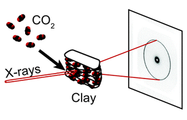
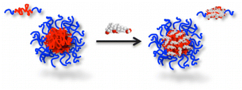
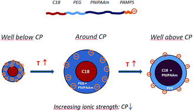

Research interests
The main activity is on the behaviour of various types of soft matter (such as nanoparticles in suspension, polymers, or amphiphiles), and porous nanostructured materials using a variety of experimental methods. These include
small-angle neutron scattering (SANS) and synchrotron-based x-ray scattering. Instrumentation and methodological development of scattering techniques is also of interest.
Some recent publications
The activities involve active collaborations with researchers and
labs located at Institute for Energy Technology at Kjeller, Norway.
International collaborations include: ESPCI-ParisTech/IPGG, France,
Univ. Amsterdam Netherlands, Univ.Rennes1 France, UFPE-Recife Brazil,
UnB-Brasilia Brazil, UFABC-Sao Paulo Brazil, PUC-Rio de Janeiro
Brazil, USP-Sao Paulo Brazil, Niels Bohr Institute at Univ. Copenhagen
Denmark, MaxIVlab Lund Sweden, Univ. Havana Cuba, Univ. Manchester UK,
Chalmers Univ. Sweden, Harvard Univ. USA, Aalto Univ. Finland, NOVA
Univ. Lisboa Portugal, IST-Lisboa Portugal, and others
For detailed information about the (100+) publications, (100+) talks,
(~300) conference contributions, (50+) highlights and popular science
contributions, (30+) conferences organized, membership of (~20)
professional committees/panels, coordination of (~20) funded projects,
supervision for graduation of (~40) MSc students and (~10) PhD
students, supervision of (~8) postdocs, etc., see these webpages and
the extended CV:
Some recent research highlights:

L. Michels, J. O. Fossum, Z. Rozynek, H. Hemmen, K. Rustenberg, P. A. Sobas, G. N. Kalantzopoulos, K. D. Knudsen, M. Janek, T. S. Plivelic & G. J. da Silva
Scientific Reports by Nature 5, 8775 (2015)

S. Bayati, L. Galantini, K.D. Knudsen KD & K. Schillén
Langmuir 31, 13519-13527 (2015)

H. Mauroy, T. S. Plivelic, J. Suuronen, F. S. Hage, J. O. Fossum & K. D. Knudsen
Applied Clay Science 108, 19–27 (2015)

F. Kahnamouei, K. Zhu, R. Lund, K.D. Knudsen & B. Nyström
RSC Advances 5, 46916–46927 (2015)